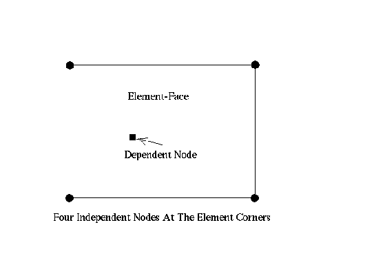

Next: How to define loads
Up: Tips and Hints
Previous: How to change the
Contents
How to connect independent meshes
Sometimes it is advisable to ''glue'' independent meshes together instead of trying to create one big seamless-mesh. Or you just want to create a contact formulation were you know that no separation will happen. In this situations you might use equations (also called mpc's) which connect one dependent node with one or more independent nodes. The independent side should be coarser than the dependent side to avoid gaps in the connection. See the command ''send in combination with the option ''areampc'' how to create such connections. Sliding and fixed contact as well as press-fits can be modelled. The necessary sets should be defined based on geometry not on the mesh. In this case the definition will be stored with the ''save'' or ''exit'' command and can be used after the next program call.
Background: The movement of each location in an element (or on its surface) is fully described by the movement of its associated nodes and its shape-function. In an iterative algorithm element-coordinates are varied until the real-world coordinates of a dependent node are matched. Based on the element coordinates the shape function gives the participation (weight) factors of the independent nodes (the coefficients in the mpc's). This approach delivers valid results as long as the dependent node is not located outside of the independent element. Therefore the location of the dependent node has to be modified in such cases. The dependent will be moved to the surface of the independent element (again decribed by its shape-function) and the procedure is repeated.
Figure 12:
Dependent node on element face to create a connection
|  |
Next: How to define loads
Up: Tips and Hints
Previous: How to change the
Contents
root
2017-10-07